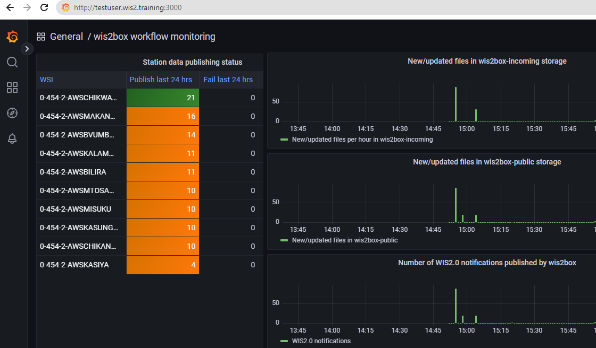
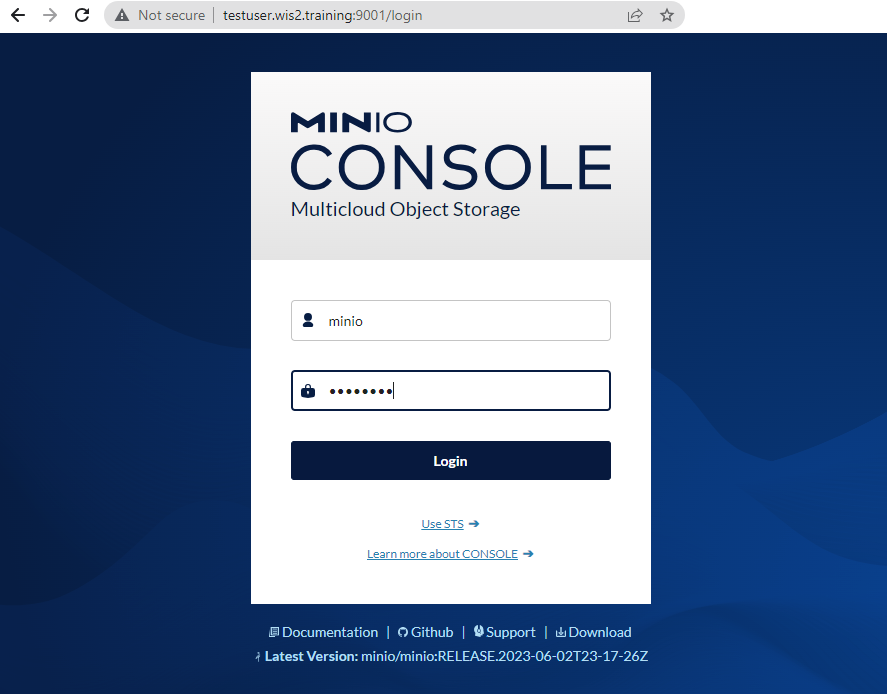
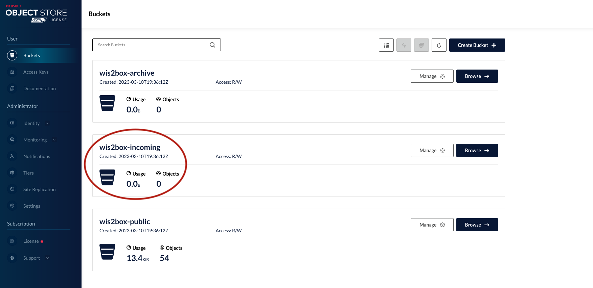
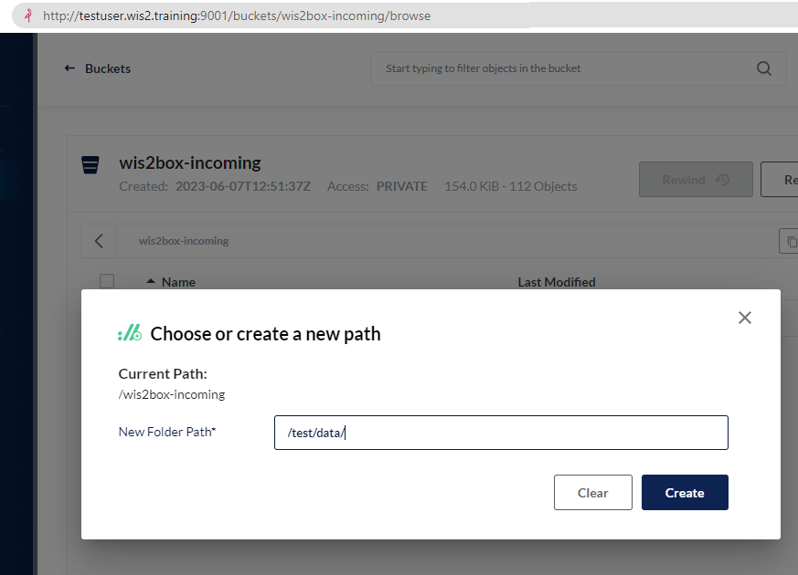
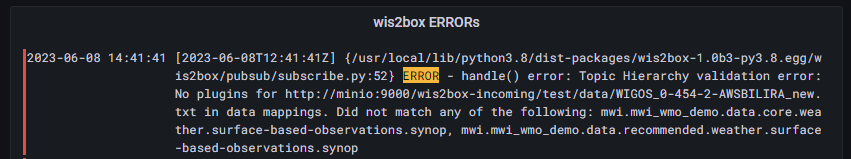
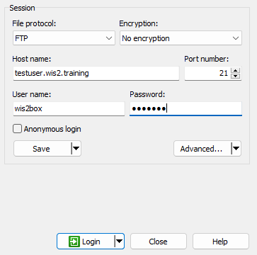
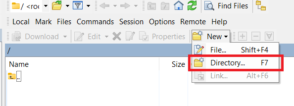
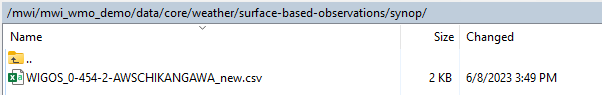

Data ingest and monitoring
Introduction
In this session you will learn various ways to ingest data into your wis2box and learn how you can monitor if your data is being ingested without errors.
Preparation
Login to you student VM using your SSH client.
Make sure wis2box is up and running:
cd ~/wis2box-1.0b4
python3 wis2box-ctl.py start
python3 wis2box-ctl.py status
Make sure your have MQTT Explorer running and connected to your instance.
Open the Grafana dashboard
Open the Grafana dashboard home-page at http://<your-host>:3000

Question
Are there any errors reported so far?
Have there been any WIS2 notifications published in the last 24 hours?
Keep a web browser tab open with the Grafana dashboard during the next few exercises to monitor the status of your data publishing.
Ingesting your data into wis2box
You can use multiple methods to ingest data into wis2box and start publishing notifications to WIS2.
Previously you used the wis2box data ingest command from within the wis2box-management container, which requires the data to be available on the wis2box instance.
Another method for manually ingesting data is to use the MinIO admin interface to upload a file into the wis2box-incoming bucket.
If your data-collection software supports sending data to an FTP endpoint you could use the optional wis2box-ftp container setup.
You can also automate data ingest using a script to copy data into the wis2box-incoming bucket at regular intervals, for example using Python and the MinIO-client.
Download test data
Click on the two links below and download two new data samples on your computer:
WIGOS_0-454-2-AWSBILIRA_new.csv
WIGOS_0-454-2-AWSCHIKANGAWA_new.csv
MinIO admin interface
Open a new tab in your web browser and visit the page http://<your-host>:9001. You should see the login screen for MinIO.
You can login with username minio and password minio123:

You should be see the buckets 'wis2box-archive', 'wis2box-incoming', 'wis2box-public'.
You can click 'browse' to view the contents of the buckets.
Navigate to the wis2box-incoming bucket:

Click the Create new path button and create the new folder path: /test/data/.

And then upload the file WIGOS_0-454-2-AWSBILIRA_new.csv into the folder wis2box-incoming/test/data.
View the Grafana dashboard
Go back to the Grafana dashboard on your instance at port 3000.
You should see the following error:

Navigate the directory structure until you are in the folder wis2box-incoming/mwi/mwi_wmo_demo/data/core/weather/surface-based-observations/synop
Upload the file WIGOS_0-454-2-AWSBILIRA_new.csv to wis2box-incoming/mwi/mwi_wmo_demo/data/core/weather/surface-based-observations/synop
View the Grafana dashboard
Check the Grafana dashboard; can you confirm the wis2box workflow was initiated after you uploaded your data?
View new messages on your wis2box-broker
Check MQTT Explorer, can you confirm that new messages were successfully published on your wis2box broker?
Note
The wis2box interprets the folder-structure in the wis2box-incoming bucket as the corresponding topic-hierarchy for the file.
mwi.mwi_wmo_demo.data.core.weather.surface-based-observations.synop
corresponds to the path:
mwi/mwi_wmo_demo/data/core/weather/surface-based-observations/synop
If there are no data-mappings defined for the topic-hierarchy corresponding to the directory that received data, wis2box will not initiate the workflow.
wis2box FTP
To allow your data to be accessible over FTP you can use the wis2box-ftp container, which provides a service that forwards data received over FTP to MinIO.
For the purpose of this training you can use your predefined configuration in ~/wis2box-1.0b4/ftp.env to start your wis2box-ftp as follows:
cd ~/wis2box-1.0b4/
docker-compose -f docker-compose.wis2box-ftp.yml --env-file ftp.env up -d
To test the FTP service, you can use WinSCP on your local laptop and prepare the connection to the wis2box-ftp container as follows (password=wis2box)

Once you have established the connection you will land in an empty directory.
Select the option to create a 'new directory':

Create the directory mwi/mwi_wmo_demo/data/core/weather/surface-based-observations/synop
Enter the new directory you created and you can copy the file WIGOS_0-454-2-AWSCHIKANGAWA_new.csv from your host machine on the wis2box-ftp:

Check your Grafana dashboard and MQTT Explorer to review the result of copying the file in the wis2box-ftp.
Question
Did you manage to successfully publish WIS2 notifications for your new data?
If not, review the errors reported and try to determine what went wrong.
Note
You can run docker logs wis2box-ftp to check if the FTP service is running correctly.
Note
You can view ftp-configuration in ftp.env from the command line:
cat ~/wis2box-1.0b4/ftp.env
FTP_USER=wis2box
FTP_PASS=wis2box
FTP_HOST=testuser.wis2.training
WIS2BOX_STORAGE_ENDPOINT=http://testuser.wis2.training:9000
WIS2BOX_STORAGE_USER=minio
WIS2BOX_STORAGE_PASSWORD=minio123
LOGGING_LEVEL=WARNING
To change the username/password for the wis2box FTP service, edit the file ftp.env and update FTP_USER and FTP_PASS.
If you you update your storage credentials from the default minio/minio123, you will also need to update the values in ftp.env.
See wis2box-ftp documentation for more information on how to use the wis2box-ftp service.
MinIO Python client (optional exercise)
You may want to automate data ingest from your system into wis2box using Python tools.
MinIO provides a Python client which can be installed as follows:
pip3 install minio
On your student VM the 'minio' module for Python will already be installed.
Go to the directory exercise-materials/data-ingest and run the example script using the following command:
cd ~/exercise-materials/data-ingest
python3 examples/scripts/copy_to_incoming.py
Note
The sample script needs to be modified before it can be used.
The script needs to know the correct endpoint for accessing MinIO on your wis2box. If wis2box is running on your host, the MinIO endpoint is available at http://<your-host>:9000.
The sample script provides the basic structure for copying a file into MinIO. Try to ingest a data sample of your choosing using this script.
ingest data using Python
Use the Python example provided to create your own Python script to ingest data into your wis2box.
Ensure that you:
- define the correct MinIO endpoint for your host
- define the correct path in MinIO for the topics defined in your
data-mappings.yml - determine the correct local path where the script can access the data to ingest
Ensure that the script runs correctly and new data notifications are published on your wis2box broker. Review and correct any errors reported on the Grafana dashboard:
Conclusion
Congratulations!
In this practical session, you learned how to:
- trigger wis2box workflow using different data ingest methods
- monitor the status of your data ingest and publishing